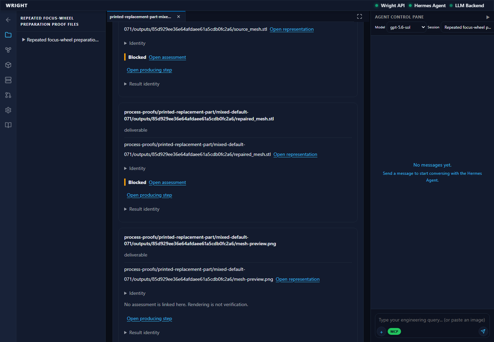
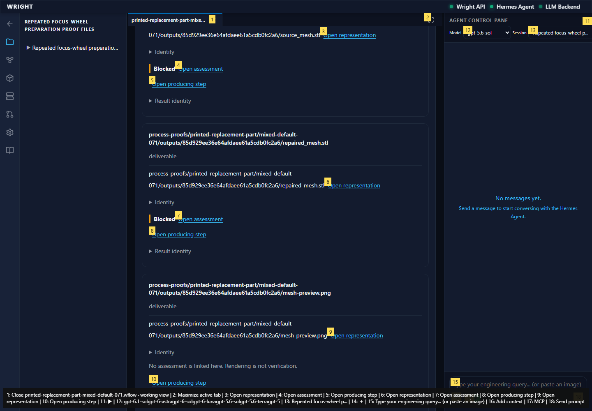

Read-only exact assessment display for two completed digital preparation chains. Both remain held for required human engineering review. No new execution, decision or acceptance.
blocked
expect(received).toBe(expected) // Object.is equality Expected: "assessment-e16a660ca1854022ad82e2a2fefe0cea" Received: undefined
Expected: Exact source assessment remains readable
Actual: expect(received).toBe(expected) // Object.is equality Expected: "assessment-e16a660ca1854022ad82e2a2fefe0cea" Received: undefined

